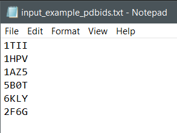

A cross platform GUI app for windows and linux to download pdb or fasta files from Protein Data Bank by using pdb identifiers
Windows 10 version 1803 or later To find the windows version of your machine go to the search bar and type:
then click on the winver program to see which windows 10 version do you have
Install the curl tool by opening the terminal and pasting the following:
sudo apt update
sudo apt install curl
the input can be only 1 pdb id or a list of pdb ids as seen here:

while the output data can look like this: